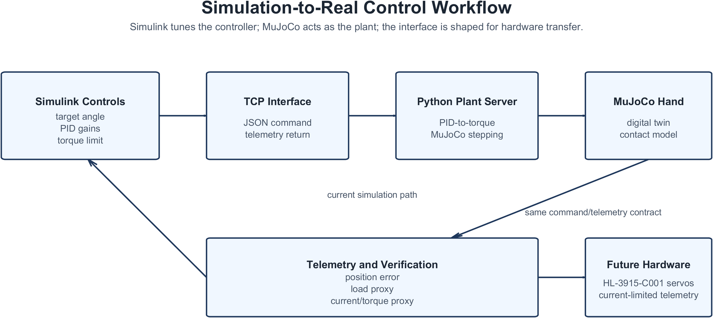
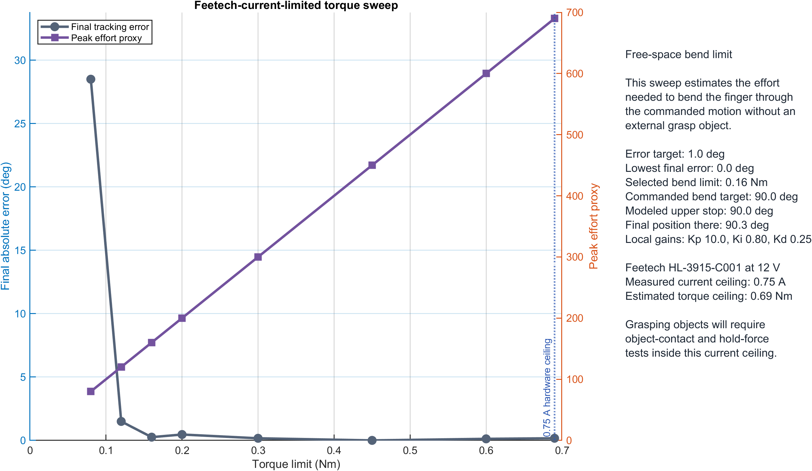
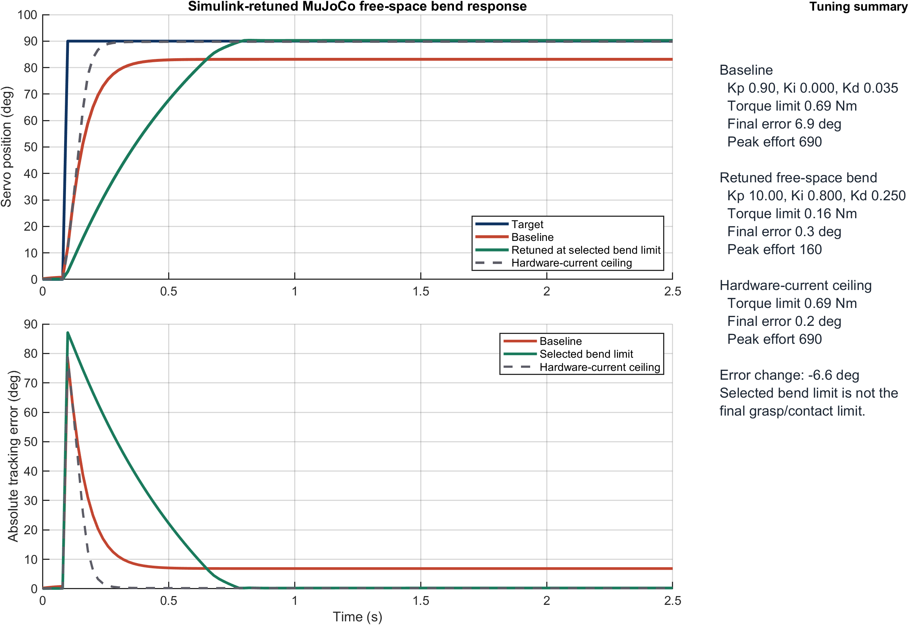
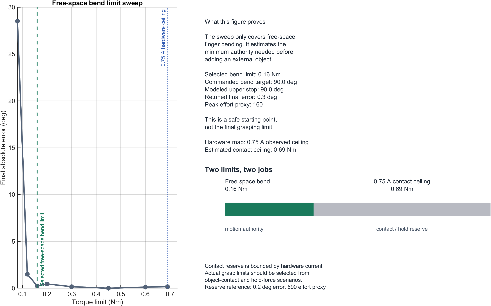
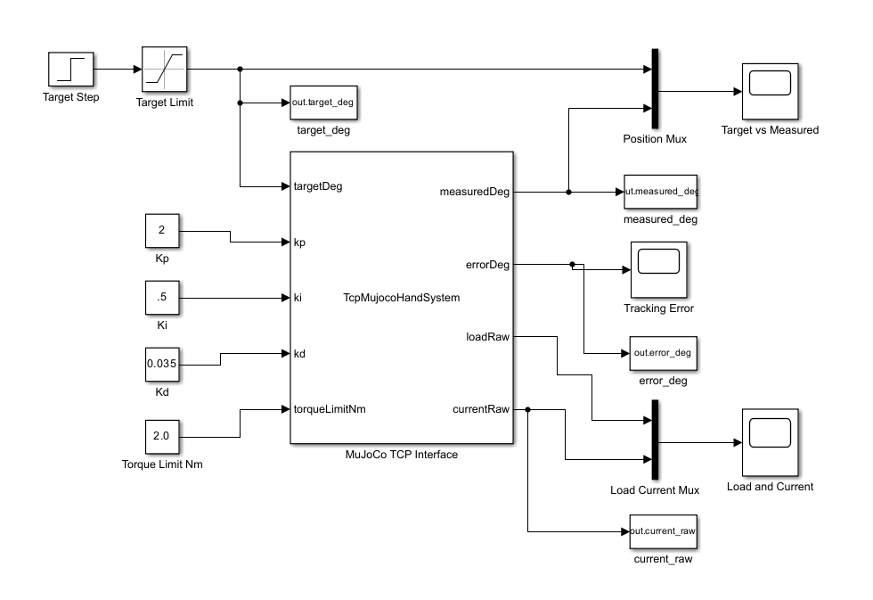

What this page covers
My flagship compliant hand project.
The evidence below traces the hand from mechanism concept into simulation, control, and bench testing: a monolithic multi-material FDM-compatible linkage, buckling joint concept, MuJoCo/Simulink control setup, current limits, contact behavior, and transfer path to physical hardware.
- Manufacturing: actuation paths and compliant components are designed to be printed together as a monolithic multi-material FDM part.
- Mechanism: compliant linkage behavior, buckling drive joint, distal wrapping after proximal blockage, and a path toward variable-stiffness integration.
- Controls: Simulink commands a Python/MuJoCo plant through TCP, with the same command and telemetry concepts intended for Feetech hardware.
- Bench validation: printed three-motor hardware demos, simulation, controller plots, torque/current limits, proximal-blocked contact media, and related Python servo-control code.
Early bench validation
Early bench tests with the physical hand.
These short clips show the current three-motor hand hardware interacting with everyday objects. They are early validation demos that connect the simulation and control work to the physical prototype while leaving formal performance characterization for the next test phase.
Architecture
Simulink tunes the controller while MuJoCo acts as the plant.
A TCP bridge keeps MATLAB, Python, and MuJoCo separated while preserving the same command/telemetry structure that a later hardware backend can use.

Command inputs
Target angle, PID gains, torque/current limit, scenario settings, and a reserved proximal-stiffness command channel.
Telemetry outputs
Measured position, error, load proxy, estimated current, contact metrics, and pass/fail test files.
Transfer value
The Simulink blocks become a real tuning surface once hardware position and current telemetry are connected.
Mechanism design
Sliding drive joint plus bending membrane, designed for monolithic FDM printing.
The mk19 finger is treated as a printed compliant mechanism, not a rigid four-bar assembled from many discrete parts. The actuation path, compliant members, and flexural behavior are designed around a monolithic multi-material FDM print. A sliding drive joint handles servo disk eccentricity and tolerance stackup, while the bending membrane stores elastic energy and allows distal wrap after the proximal link is blocked.
| Element | Mechanical function | Simulation representation | Test method |
|---|---|---|---|
| Monolithic multi-material body | Combines rigid structure, compliant links, and actuation paths in an FDM-printable hand body. | Rigid and compliant sections are separated into simplified joints and stiffness elements. | Bench hardware demos show the printed hand interacting with everyday objects. |
| Servo disk | Converts Feetech servo rotation into linkage drive motion. | Torque-limited hinge with PID command. | Current-limited torque sweep and 90 degree bend characterization. |
| Sliding drive joint | Allows drive-bar translation so the servo disk does not over-constrain the linkage. | Low-friction slide joint in the drive path. | Free-space bend remains smooth before object-contact work. |
| Bending membrane | Transmits motion into the distal link after proximal blockage. | Compliant coupling stiffness around 0.022 N*m/rad. | Small-sphere proximal-block media shows distal continuation. |
| Proximal VSJ channel | Changes how readily the proximal link yields during object contact. | Reserved 1x to 4x distal flexure stiffness range in simulation. | Keeps stiffness-tuning experiments separate from the verified current-limited controller. |
Controls model
Torque/current limits are part of the design, not an afterthought.




Contact media
Free-space motion versus proximal-blocked compliant motion.
The goal is to show the core mechanism behavior: without an object, the finger follows the commanded bend path; with a sphere blocking the proximal link, distal motion continues through the compliant drive path.
Verification snapshot
Evidence map for the current hand workflow.
| Claim | Status | Evidence | Engineering value |
|---|---|---|---|
| Simulink can command and tune the MuJoCo hand plant. | Working | Top-level model, TCP bridge, response plots. | Shows a clean controller/plant boundary rather than a one-off animation. |
| Free-space bend target can be characterized and tuned. | Working | 90 deg bend target and torque sweep. | Turns mechanism limits into measurable requirements. |
| Proximal blockage changes motion path through compliance. | Working | Manual object placement and top/side media. | Documents the distal-wrap behavior that makes the compliant finger interesting. |
| Current ceiling maps to practical torque authority. | Working | 0.75 A observed ceiling mapped to about 0.69 Nm. | Connects servo electrical limits to safe grasp-force reasoning. |
| Variable stiffness is isolated from the controller core. | Extension | Reserved stiffness channel and separate VSJ/RL experiment path. | Keeps advanced optimization separate from the verified current-limited controller. |
Hardware controller
OriHand Python controller brings the real Feetech bus into the workflow.
The Python sample is a direct PC-to-URT-2 hardware controller for Feetech HLS servos. It complements the Simulink/MuJoCo work by supporting real servo discovery, position commands, current limits, live feedback, and scripted motion sequences.
Bus interface
Builds Feetech packets, checks status responses, writes registers, and decodes live position, voltage, temperature, load, and current.
Safe motion
Converts degree, RPM, acceleration, and amp-level current limits into servo raw units with clamping and soft-home settings.
Hardware bring-up
GUI panels, CLI commands, discovered-servo control, ID assignment, live feedback, and saved sequence playback support repeatable testing with the current three-motor setup.